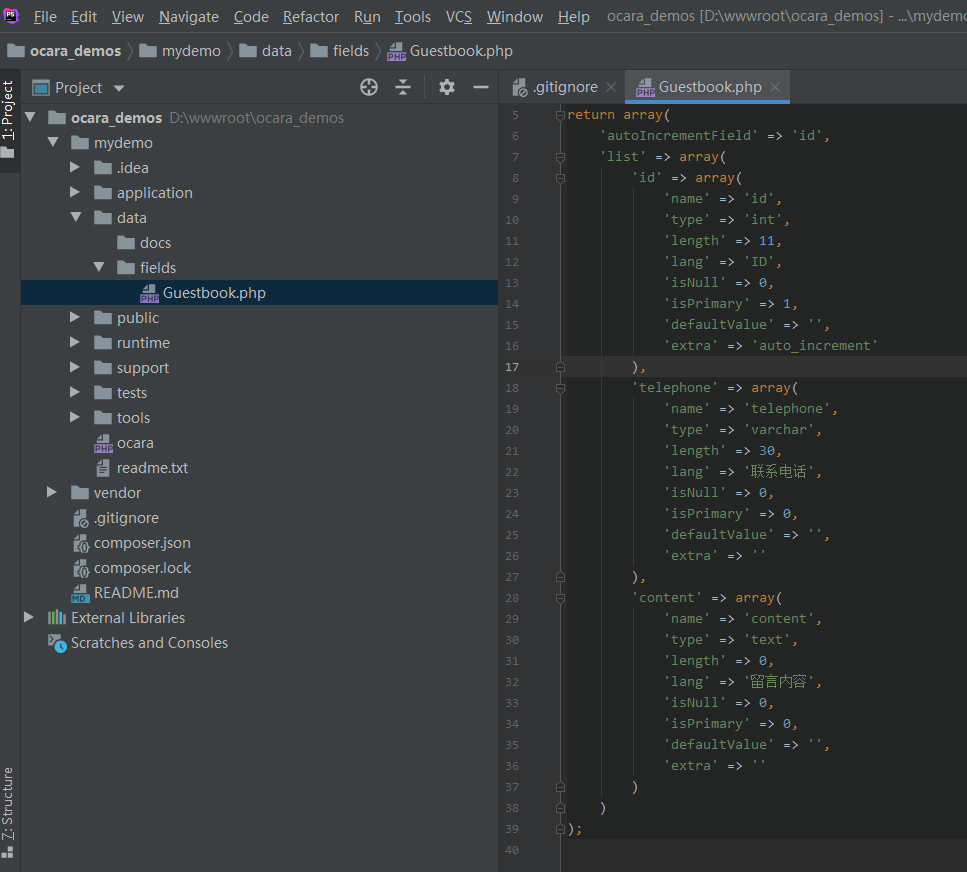

5.3 数据模型的使用（Model）
1、新建模型
（1）直接新建Model类
//新建User模型类实例
$userModel = new \app\model\database\UserModel();
//新建BBS数据库连接下面的User模型类实例
$userModel = new \app\model\database\BBS\UserModel();
（2）使用build()方法
本框架所有的类，都继随自\Ocara\Base基类，该基类定义了build()方法，可以新增当前对象。
//会新建application/model下面的User模型类实例
$userModel = \app\model\database\UsersModel::build();
//会新建application/model/BBS下面的User模型类实例
$userModel = \app\model\database\BBS\UsersModel::build();
（3）使用控制器动作的model()方法
使用model()方法建立的模型，后面都可以用该方法函数直接获取。默认是当前控制器同名的模型。
model([class])
参数说明：
| 名称 |
描述 |
| class |
可选。数据模型类。默认是当前控制器同名的模型。
|
上述实例可以改成如下：
$userModel = $this->model('\app\model\database\UserModel');
如果是bbs服务器默认库中的user表，则是：
$userModel = $this->model('\app\model\database\BBS\UserModel'); //会调用bbs数据库连接的目录中的User模型
如下示例：
class UpdateAction extends Controller
{
public function __action()
{}
/**
* 初始化
*/
public function display()
{
//用户表Model使用
$userData = $this
->model('\app\model\database\UserModel') //第一次使用时，会新建该模型类对象
->limit(0, 100)
->getAll();
//用户表Model使用
$userData2 = $this
->model('\app\model\database\UserModel') //第二次使用，不会再新建类
->limit(0, 100)
->getAll();
//home表Model使用
$homeData = $this
->model() //因为home表模型名与控制名称同名，可以不传递参数建立模型
->limit(0, 100)
->getAll();
}
/**
* 表单提交的处理
*/
public function submit()
{}
}
2、字段缓存
数据模型在查询和保存时都要查出表字段进行一些处理，所以增加了字段缓存，以免经常查库。
（1）更新字段缓存
所以修改了字段，要更新一下缓存才行，只要在开发者中心更新字段。请参考。
（2）默认缓存方式
字段默认缓存在data/fields目录中与模型同名的文件中。

（3）自定义缓存方式
如果要修改缓存方式，比如缓存在Redis，只要使用事件。
可以在基类Base\Model\DatabaseModel中修改onGetCacheFields()和onSaveCacheFields()事件处理函数。
实例如下：
（a）我们首先在开发者中心建立一个Redis缓存模型。
namespace app\model\cache;
use Base\Model\CacheModel;
class TableFieldsModel extends CacheModel
{
protected $connectName = 'defaults';
protected $prefix = 'tableFields:';
protected $database = '0';
/**
* 初始化模型
*/
public function __model()
{}
/**
* 获取数据
* @param $name
* @return array
*/
public function getData($name)
{
$key = $this->getKeyName($name);
$data = $this->get($key);
if ($data) {
$data = json_decode($data, true) ? : array();
}
return $data;
}
/**
* 保存数据
* @param $name
* @param $fieldsConfig
*/
public function saveData($name, $fieldsConfig)
{
$key = $this->getKeyName($name);
$data = $fieldsConfig ? json_encode($fieldsConfig) : OC_EMPTY;
$this->set($key, $data, 3600 * 24 * 30);
}
}
（b）修改基类Base\Model\DatabaseModel的字段缓存事件。
/**
* 数据库模型基类
*/
namespace Base\Model;
use Ocara\Models\DatabaseModel as BaseDatabaseModel;
use app\model\cache\TableFieldsModel;
class DatabaseModel extends BaseDatabaseModel
{
/**
* 获取字段缓存事件处理
* @param $event
* @param $eventTarget
* @return array|mixed
*/
public function onGetCacheFields($event, $eventTarget)
{
TableFieldsModel::build()->getData(self::getClass());
}
/**
* 保存字段缓存事件处理
* @param $fieldsConfig
* @param $event
* @param $eventTarget
*/
public function onSaveCacheFields($fieldsConfig, $event, $eventTarget)
{
TableFieldsModel::build()->saveData(self::getClass(), $fieldsConfig);
}
}
（c）增加缓存更新脚本
我们不应在线上使用开发者中心，所以上线后应该将系统运模式改成非develop。
这样，我们更新redis缓存只能使用命令行脚本了，只要使用数据模型的loadFields(false)就可以更新缓存，其中的false就表示不使用缓存。
namespace app\console\main\controller\common;
use app\service\CarCodesService;
class RefreshFieldsCacheAction extends Controller
{
/**
* 初始化
*/
protected function __action()
{
$data = $this->request->getGet();
$this->validator
->addRule('modelClass', 'notEmpty') //modelClass就类名
->validate($data);
$model = new $data['modelClass']();
$model->loadFields(false); //传递false表示不使用缓存
}
}
然后，执行脚本：php ocara main/common/refreshFieldsCache modelClass/app\model\database\OrdersModel
3、切换数据库
切换数据库有两种：
（1）软切换
只是设置数据模型的数据库名称，不会执行“SELECT 数据库名”语句。
所以只影响当前数据模型。常用于分库规则设置。
需要使用数据模型Model的setDatabase()方法。
setDatabase(databaseName)
参数说明：
| 名称 |
描述 |
| databaseName |
必填。数据库名称。 |
namespace app\model\database;
use Base\Model\DatabaseModel;
class GoodsModel extends DatabaseModel
{
protected static $table = 'goods';
protected static $primary = 'id';
protected static $entity = 'app\model\entity\database\GoodsEntity';
/**
* 初始化模型
*/
public function __model()
{
$this->plugin()->setDatabase('db_goods');
}
}
（2）硬切换（不建议使用）
会执行“SELECT 数据库名”语句。
它改动的是当前数据库连接，会影响当前所有连接该数据库的数据模型，因为同一个数据库连接全局是同一个对象。
需要在数据模型的afterConnect()事件处理器中，调用数据库连接对象的selectDatabase()方法。
selectDatabase(databaseName)
参数说明：
| 名称 |
描述 |
| databaseName |
必填。数据库名称。 |
namespace app\model\database;
use Base\Model\DatabaseModel;
class GoodsModel extends DatabaseModel
{
protected static $table = 'goods';
protected static $primary = 'id';
protected static $entity = 'app\model\entity\database\GoodsEntity';
/**
* 初始化模型
*/
public function __model()
{}
/**
* 连接后置事件
*/
public function afterConnect($connect, $isMaster, $event, $eventTarget)
{
$connect->selectDatabase('db_goods');
}
}